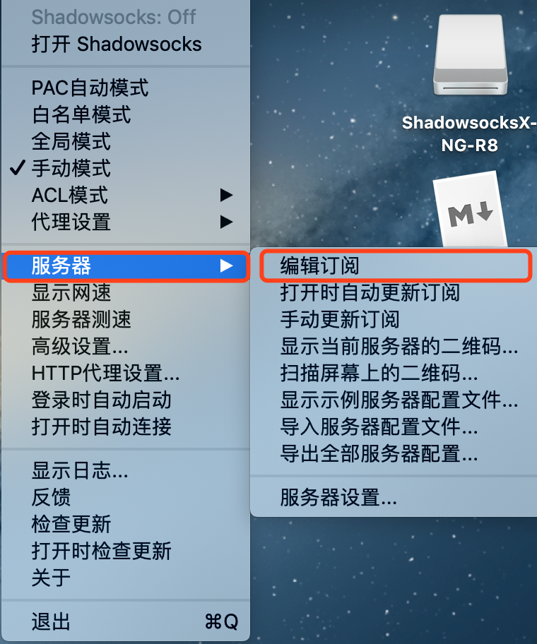

MAC OSX 客戶端配置
登录
首先打开https://nnss.ooo 或者https://wmsxwd.com
点击登录按钮，输入您的账号和密码进行登录
进入用户中心
软件下载
1、登录后默认进入用户中心，向下滑动，找到【快速添加节点】

2、点击MACOS 选项卡，切换到MACOS标签
3、点击下载ShadowsocksX-NG按钮，将软件下载到本机，你会得到一个安装包，像这样

4、双击打开，你会看到安装包的里面的软件包，like this

5、将软件包拖动到你的应用程序目录（如上图所示）
6、在docker中点击lanchpad打开应用程序，你会发现你的应用程序列表中多出一个shadowsocks的应用程序

节点配置【备用网址https://wmsxwd.com】
1、打开shadowsocks-NG应用程序，第一次打开如果弹出无法打开的提示

请依次点击launchpad —— 系统偏好设置 —— 安全性与隐私 —— 通用选项卡 —— 允许从以下位置下载的应用 —— 提示【已阻止打开shadow socks-NG】 —— 点击【仍要打开】按钮，输入您的用户密码后即可打开

2、打开后界面没有显示，请在您最上方的状态栏中可以找到一个小飞机的图标。长这样

3、单击小飞机的图标，依次点击 【服务器】—【编辑订阅】，打开编辑订阅窗口。如图所示

4、下面回到我们的网站，复制【单端口订阅地址】下面的地址，请务必全部选中，当然，您也可以点击【点击复制】按钮，地址会自动复制到您的电脑。
5、点击【编辑订阅】窗口的➕按钮，输入我们的网址并确定

- 订阅地址：输入在网站上获取到的订阅地址
- 口令：不需要输入
- 组名：不需要输入
- 输入完毕后点击 【OK】按钮
6、依次单击任务栏上的【小飞机图标】，点击【服务器】— 【手动更新订阅】

如果弹出以下窗口

请使用我们的备用网址进行节点配置操作。提示【成功更新订阅】则订阅成功
节点格式为【节点名称】x【倍率】

7、节点选择。点击状态栏中的【小飞机】图标。

会提示您的剩余流量，指向【剩余流量：xxxx】-- 【我们所向往的-单端口】，会弹出您当前可以使用的节点

选择您想要的节点即可
举例说明：如果您使用了1GB流量，倍率为1.1，那么您账号实际扣减流量为1.1GB
节点后缀为【Netflix】表示该节点可以观看Netflix
8、节点启用。点击状态栏中的【小飞机】图标，依次点击【打开shadowsocks】-- 【PAC自动模式】启动加速程序

使用浏览器访问https://www.google.com 来测试是否正常连接网络